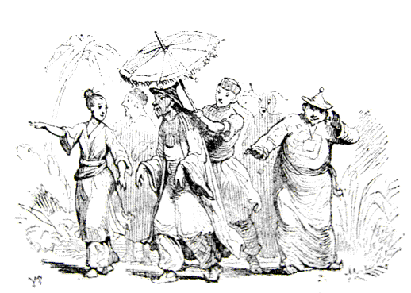
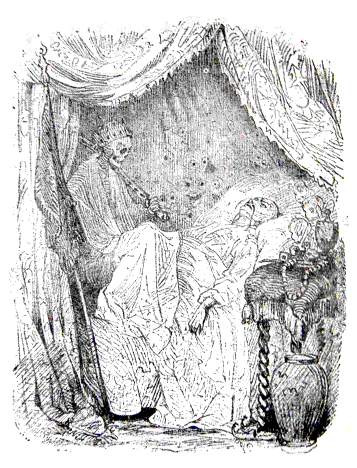
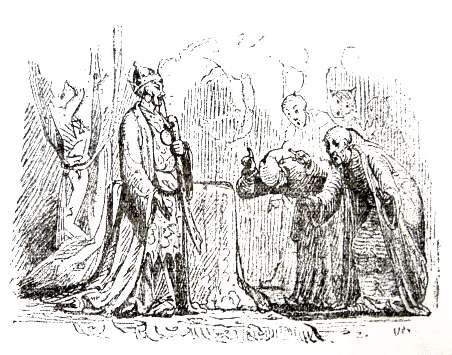

| 小夜啼鳥 | |
| アンデルセンハンス・クリスチャン | |
| (2012) | |
小夜啼鳥
ハンス・クリスティアン・アンデルセン
楠山正雄訳

みなさん、よくごぞんじのように、シナでは、皇帝はシナ人で、またそのおそばづかえのひとたちも、シナ人です。
さて、このお話は、だいぶ昔のことなのですがそれだけに、たれもわすれてしまわないうち、きいておくねうちもあろうというものです。
ところで、そのシナの皇帝の御殿
というのは、どこもかしこも、みごとな、せとものずくめでして、それこそ、世界一きらびやかなものでした。
なにしろ、とても大したお金をかけて、ぜいたくにできているかわり、こわれやすくて、うっかりさわると、あぶないので、よほどきをつけてそのそばをとおらなければなりません。御苑
にはまた、およそめずらしい、かわり種の花ばかりさいていました。なかでもうつくしい花には、そばをとおるものが、いやでもそれにきのつくように、りりりといいね
になるぎんのすずがつけてありました。ほんとうに、皇帝の御苑は、なにからなにまでじょうずにくふうがこらしてあって、それに、はてしなくひろいので、おかかえの庭作
でも、いったいどこがさかいなのか、よくはわからないくらいでした。なんでもかまわずどこまでもあるいて行くと、りっぱな林にでました。そこはたかい木立
があって、そのむこうに、ふかいみずうみをたたえていました。林をではずれるとすぐ水で、そこまで木
のえだがのびているみぎわちかく、帆
をかけたまま、大きなふねをこぎよせることもできました。
さて、この林のなかに、うつくしいこえでうたう、一羽
のさよなきどりがすんでいましたが、そのなきごえがいかにもいいので、日びのいとなみにおわれているまずしい漁師
ですらも、晩、網
をあげにでていって、ふと、このことりのうたが耳にはいると、ついたちどまって、ききほれてしまいました。
「どうもたまらない。なんていいこえなんだ。」と、漁師はいいましたが、やがてしごとにかかると、それなり、さよなきどりのこともわすれていました。でもつぎの晩
、さよなきどりのうたっているところへ、漁師がまた網にでてきました。そうして、またおなじことをいいました。
「どうもたまらない、なんていいこえなんだ。」
せかいじゅうのくにぐにから、旅行者
が皇帝のみやこにやってきました。そうして、皇帝の御殿と御苑のりっぱなのにかんしんしましたが、やはり、このさよなきどりのうたをきくと、口をそろえて、
「どうもこれがいっとうだな。」といいました。で、旅行者たちは、国にかえりますと、まずことりのはなしをしました。学者たちは、その都と御殿と御苑のことをいろいろと本にかきました。でもさよなきどりのことはけっして忘れないどころか、この国いちばんはこれだときめてしまいました。それから、詩のつくれるひとたちは、深いみずうみのほとりの林にうたう、さよなきどりのことばかりを、この上ないうつくしい詩につくりました。
こういう本は、世界じゅうひろまって、やがてそのなかの二三冊は、皇帝のお手もとにとどきました。皇帝は金のいすにこしをかけて、なんべんもなんべんもおよみになって、いちいちわが意をえたりというように、うなずかれました。ごじぶんの都や御殿や御苑のことを、うつくしい筆でしるしているのをよむのは、なるほどたのしいことでした。
「さはいえど、なお、さよなきどりこそ、こよなきものなれ。」と、そのあとにしかし、ちゃんとかいてありました。
「はてな。」と、皇帝は首をおかしげになりました。「さよなきどりというか。そんな鳥のいることはとんとしらなかった。そんな鳥がこの帝国のうちに、しかも、この庭うちにすんでいるというのか。ついきいたこともなかったわい。それほどのものを、本でよんではじめてしるとは、いったいどうしたことだ。」
そこで皇帝は、さっそく侍従長
をおめしになりました。この役人は、たいそう、かくしきばった男で、みぶんの下のものが、おそるおそるはなしかけたり、または、ものでもたずねても、ただ「ペ」とこたえるだけでした。ただしこの「ペ」というのに、べつだんのいみはないのです。
「この本でみると、ここにさよなきどりというふしぎな鳥がいることになっているが。」と、皇帝はおたずねになりました。「しかもそれがわが大帝国内
で、これが第一等
のものだとしている。それをどうして、いままでわたしにいわなかったのであるか。」
「わたくしもまだ、そのようなもののあることは、うけたまわったことがございません。」と、侍従長はいいました。「ついぞまだ、宮中
へすいさんいたしたこともございません。」
「こんばん、さっそく、そのさよなきどりとやらをつれてまいって、わがめんぜんでうたわせてみせよ。」と、皇帝はおっしゃいました。「みすみす、じぶんがもっていて、世界じゅうそれをしっているのに、かんじんのわたしが、しらないではすまされまい。」
「ついぞはや、これまでききおよばないことでございます。」と、侍従長は申しました。「さっそくたずねてみまする。みつけてまいりまする。」
さて、そうはおこたえ申しあげたものの、どこへいって、それをみつけたものでしょう。侍従長は御殿じゅうの階段
を上ったり下
りたり、廊下
や広間
のこらずかけぬけました。でもたれにあってきいても、さよなきどりのはなしなんか、きいたというものはありません。そこで侍従長は、また皇帝のごぜんにかけもどってきて、さよなきどりのことは、本をかきましたものの、かってなつくりばなしにちがいありませんと申しました。
「おそれながら陛下
、すべて書物
にかいてありますことを、そのままお用
いになってはなりません。あれはこしらえごとでございます。いわば、妖術
魔法
のるいでございます。」
「いや、しかし、わたしがこの鳥のことをよんだ本というのは、」と、皇帝はおっしゃいました。「叡聖文武
なる日本皇帝よりおくられたもので、それにうそいつわりの書いてあろうはずはないぞ。わたしはぜひとも、さよなきどりのこえをきく。どうあっても、こんばんつれてまいれ。かれはわたしの第一
のきにいりであるぞ。それゆえ、そのとおり、とりはからわぬにおいては、この宮中につかえるたれかれのこらず、夕食ののち、横
ッ腹
をふむことにいたすから、さようこころえよ。」
「チン ペ。」と、侍従長は申しました。それからまた、ありったけの階段を上ったり下りたり、廊下や広間をのこらずかけぬけました。御殿の役人たちも、たれでも横ッ腹をふみにじられたくはないので、そのはんぶんは、いっしょになって、かけまわりました。そこで、世界じゅうがしっていて、御殿にいるひとたちだけがしらない、ふしぎな、さよなきどりのそうさくが、はじまりました。
とうとうおしまいに、役人たちのつかまえたのは、お台所
の下ばたらきのしがないむすめでした。そのむすめは、こういいました、
「まあ、さよなきどりですって、わたしはよくしっておりますわ。ええ、なんていいこえでうたうでしょう。まいばん、わたくしは、びょうきでねている、かわいそうなかあさんのところへ、ごちそうのおあまりを、いただいてもっていくことにしておりますの。かあさんは、湖水
のふちに、すんでいましてね、そこからわたしがかえってくるとき、くたびれて、林のなかでやすんでいますと、さよなきどりの歌がきこえます。きいているうち、まるでかあさんに、ほおずりしてもらうようなきもちになりましてね、つい涙
がでてくるのでございます［＃「ございます」は底本では「ごさいます」］
。」
「これこれ、女中。」と、侍従長はいいました。「おまえに、お台所でしっかりした役をつけてやって、おかみがお食事
をめしあがるところを、おがめるようにしてあげる。そのかわり、そのさよなきどりのいるところへ、あんないしてもらいたい。あの鳥は、さっそく、こんばん、ごぜんにめされるのでな。」
そこでみんな、そのむすめについて、さよなきどりがいつもうたうという、林のなかへはいって行きました。御殿のお役人が、はんぶんまで、いっしょについていきました。みんながぞろぞろ、ならんであるいて行きますと、いっぴきのめうしが、もうと、なきだしました。
「やあ。」と、わかい小姓
がいいました。「これでわかったよ。ちいさないきものにしては、どうもめずらしくしっかりしたこえだ。あれなら、たしかもうせん、きいたことがあるぞ。」
「いいえ、あれはめうしが、うなっているのよ。」と、お台所の下ばたらきむすめがいいました。
「鳥のところまでは、まだなかなかですわ。」
こんどはかえるが、ぬまの中で、けろけろとなきはじめました。
「りっぱなこえだ。」と、皇室づきの説教師
がいいました。「これ、どこかに、さよなきどりのこえをききつけましたぞ。まるでお寺のちいさなかねがなるようじゃ。」
「いいえ、あれはかえるでございますわ。」と、お台所むすめはいいました。「でも、ここまでくれは、もうじき鳥もきこえるでしょう。」
こういっているとき、ちょうどさよなきどりが、なきはじめました。
「ああ、あれです。」と、むすめはいいました。「ほら、あすこに、とまっているでしょう。」
こういって、このむすめは、むこうの枝
にとまっている、灰
色したことりを、ゆびさしました。
「はてね。」と、侍従長はいいました。「あんなようすをしているとは、おもいもよらなかったよ。なんてつまらない鳥なんだ。われわれ高貴
のものが、おおぜいそばにきたのにおじて、羽根
のいろもなくしてしまったにちがいない。」
「さよなきどりちゃん。」と、お台所むすめは、大きなこえで、いいました。「陛下
さまが、ぜひごぜんで、うたわせて、ききたいとおっしゃるのよ。」
「それはけっこうこの上なしです。」と、さよなきどりはいいました。そうして、さっそくうたいだしましたが、そのこえのよさといったらありません。
「まるで玻璃鐘
の音
じゃな。」と、侍従長はいいました。「あのちいさなのどが、よくもうごくものだ。どうもいままであれをきいていなかったのがふしぎだ。あれなら宮中でも、上上
のお首尾
じゃろう。」
「陛下さまのごぜんですから、もういちどうたうことにいたしましょうか。」と、さよなきどりはいいましたが、それは、皇帝ごじしんそこの場にきておいでになることと、おもっていたからでした。
「いや、あっぱれなる小歌手
、さよなきどりくん。」と、侍従長はいいました。「こんばん、宮中のえんかいに、君を招待
するのは、大いによろこばしいことです。君は、かならずそのうつくしいこえで、わが叡聖文武
なる皇帝陛下を、うっとりとさせられることでござろう。」
「わたしのうたは、林の青葉の中できいていただくのに、かぎるのですがね。」と、さよなきどりはいいました。でも、ぜひにという陛下のおのぞみだときいて、いそいそついていきました。
御殿はうつくしく、かざりたてられました。せとものでできているかべも、ゆかも、何千
とない金のランプのひかりで、きらきらかがやいていました。れいの、りりり、りりりとなるうつくしい花は、のこらずお廊下のところにならべられました。そこを、人びとがあちこちとはしりまわると、そのあおりかぜで、のこらずのすずがなりひびいて、じぶんのこえもきこえないほどでした。
皇帝のおでましになる大ひろまのまん中に、金のとまり木がおかれました。それにあのさよなきどりがとまることになっていました。宮中の役人たちのこらず、そこにならびました。あのお台所の下ばたらきむすめも、いまではせいしきに、宮中づきのごぜん部係
にとりたてられたので、ひろ間のとびらのうしろにたつことをゆるされました。みんな大礼服
のはれすがたで、いっせいに、陛下がえしゃくなさった灰いろのことりに目をむけました。
さて、さよなきどりは、まことにすばらしくうたってのけたので、皇帝のお目にはなみだが、みるみるあふれてきて、それがほおをつたわって、ながれおちたほどでした。するとさよなきどりは、なおといっそういいこえで、それは、人びとのこころのおくそこに、じいんとしみいるように、うたいました。陛下は、たいそう、およろこびになって、さよなきどりのくびに、ごじぶんの、金のうわぐつをかけてやろうとおっしゃいました。しかし、さよなきどりは、ありがとうございますが、もうじゅうぶんに、ごほうびは、いただいておりますといいました。
「わたくしは、陛下のお目になみだのやどったところを、はいけんいたしました。もうそれだけで、わたくしには、それがなによりもけっこうなたからでございます。皇帝の涙というものは、かくべつなちからをもっております。神かけて、もうそれが身にあまるごほうびでございます。」
こういって、そのとき、さよなきどりは、またもこえをはりあげて、あまい、たのしいうたをうたいました。
「まあ、ついぞおぼえのない、いかにもやさしくなでさすられるようなかんじでございますわ。」と、まわりにたった貴婦人
たちがいいました。それからというもの、このご婦人たちは、ひとからはなしかけられると、まず口に水をふくんで、わざとぐぐとやって、それで、さよなきどりになったつもりでいました。とうとう、すえずえの、べっとうとか、おはした
というひとたちまでが、この鳥には、すっかりかんしんしたと、いいだしました。
この連中
をまんぞくさせることは、この世の中でおよそむずかしいことでしたから、これはたいしたことでした。つまり、さよなきどりは、ほんとうに、うまくやってのけたわけでした。
さて、さよなきどりは、それなり宮中にとめられることになりました。じぶん用のとりかごをいただいて、まいにち、ひる二どと、よるいちどとだけ、外出をゆるされました。でかけるときには、十二人のめしつかいがひとりひとり、とりのあしにむすびつけたきぬいとを、しっかりもって、おともをして行きました。こんなふうにしてでかけたのでは、いっこうにおもしろいはずがありませんでした。
このめずらしいさよなきどりのことは、みやこじゅうのひょうばんになりました。そうして、ふたりであえば、そのひとりが、
「＊さよ。」と、いうと、あいては、「なき。」とこたえます。
＊デンマークの原語では「ナデル（小夜）」。「ガール（啼鳥）」。「ガール」にはおばかさんの意味もある。
それから、ふたりはほっとためいきをついて、それでおたがい、わけがわかっていました。いや、物売のこどもまでが、十一人も、さよなきどりという名をつけられたくらいです。でも、そのうちのひとりとして、ふしらしいもののうたえるのどでは、ありませんでした。――
ところで、ある日、皇帝のおてもとに、大きな小包
がとどきました。その包のうわがきに、「さよなきどり。」と、ありました。
「さあ、わが国の有名なことりのことを書いたしょもつが、またきたわい。」
皇帝はこうおっしゃいましたが、こんどは、本ではなくて、はこにはいった、ちいさなさいく物
でした。それはほんものにみまがうこしらえものの、さよなきどりでしたが、ダイヤモンドだの、ルビイだの、サファイヤだのの宝石
が、ちりばめてありました。ねじをまくと、さっそく、このさいく物の鳥は、ほんものの鳥のうたうとおりを、ひとふしうたいました。そうして、上したに尾をうごかすと、金や、銀が、きらきらひかりました。首のまわりに、ちいさなリボンがいわえつけてあって、それに、
「日本皇帝のさよなきどり、中華皇帝のそれにはおよびもつかぬ、おはずかしきものながら。」と、書いてありました。
「これはたいしたものだ。」と、みんなはいいました。そうして、このさいく物
のことりをはこんできたものは、さっそく、帝室
さよなきどり献上使
、というしょうごうをたまわりました。
「いっしょになかしたら、さぞおもしろい二部合唱
がきけるだろう。」
そこで、ふたつのさよなきどりは、いっしょにうたうことになりました。でも、これはうまくいきませんでした。それは、ほんもののさよなきどりは、かってに、じぶんのふしでうたって行きましたし、さいく物のことりは、ワルツのふしでやったからでした。
「いや、これはさいく物のことりがわるいのではございません。」と、宮内楽師長
がいいました。「どうしてふしはたしかなもので、わたくしどもの流儀
にまったくかなっております。」
そこで、こんどは、さいく物のことりだけがうたいました。ほんもののとおなじようにうまくやって、しかもちょいとみたところでは、ほんものよりは、ずっときれいでした。それはまるで腕輪
か、胸
にとめるピンのように、ぴかぴかひかっていました。
さいく物のことりは、おなじところを三十三回も、うたいましたが、くたびれたようすもありませんでした。みんなはそれでも、もういちどはじめから、ききなおしたいようでしたが、皇帝は、いきているさよなきどりにも、なにかうたわせようじゃないかと、おっしゃいました。――ところが、それはどこへいったのでしょう。たれひとりとして、ほんもののさよなきどりが、あいていたまどからとびだして、もとのみどりの森にかえっていったことに、気づいたものは、ありませんでした。
「いったい、これはどうしたというわけなのか。」と、皇帝はおっしゃいました。ところが、御殿の人たちは、ほんもののさよなきどりのことを、わるくいって、あのさよなきどりのやつ、ずいぶん恩しらずだといいました。
「なあに、こちらには、世界一上等の鳥がいるのだ。」と、みんないいました。
そこで、さいく物のことりが、またうたわせられることになりました。これで三十四回おなじうたをきくわけになったのですが、それでもなかなか、ふしがむずかしいので、たれにもよくおぼえることができませんでした。で、楽師長は、よけいこのとりをほめちぎって、これはまったく、ほんもののさよなきどりにくらべて、つくりといい、たくさんのみごとなダイヤモンド飾りといい、ことさら、なかのしかけといったら、どうして、ほんものよりはずっとりっぱなものだといいきりました。
「なぜと申しまするに、みなさま、とりわけ陛下におかせられまして、ごらんのとおり、ほんもののさよなきどりにいたしますると、つぎになにをうたいだすか、まえもって、はかりしることができません。しかるに、このさいくどりにおきましては、すべてがはっきりきまっております。かならずそうなって、かわることがございません。これはこうだと、せつめいができます。なかをあけて、どうワルツがいれてあるか、それがうたいすすんで、歌がつぎからつぎへとうつって行きますぐあいを、人民ども、だれのあたまにもはいるように、しめしてみせることが、できるのでございます――。」
「まったくご同感
であります。」と、みんなはいいました。
そこで、楽師長は、さっそく、つぎの日曜日
には、ひろく人民たちに、ことり拝観
をゆるされるようにねがいました。ついでにうたもきかせるようにと、皇帝はおめいじになりました。そんなわけでたれもそのうたをきくことになって、まるでお茶によったようによろこんでしまいました。このお茶にようということは、シナ人のくせでした。そこでみんな、「おお。」と、いったのち、人さしゆびをたかくさし上げて、うなずきました。けれども、ほんもののさよなきどりをきいたことのある、れいのびんぼう漁師
は、
「なかなかいいこえでうたうし、ふしもにているが、どうも、なんだかものたりないな。」といいました。
ほんもののさよなきどりは、都の土地からも、国からもおわれてしまいました。
さいくどりは、皇帝のお寝台
ちかく、絹
のふとんの上に、すわることにきまりました。この鳥に贈られて来た黄金と宝石が、のこらず、鳥のまわりにならべ立てられました。鳥は、「帝室御夜詰歌手長
」の栄職
をたまわり、左側第一位
の高位にものぼりました。たいせつなしんぞうが、このがわにあるというので、皇帝は、左
がわをことにおもんぜられました。するとしんぞうは、皇帝でもやはり左がわにあるとみえますね。それから、れいの楽師長は、さいくどりについて、二十五巻もある本をかきました。さて、この本は、ずいぶん学者ぶってもいて、それに、とてもしちむずかしい漢語
がいっぱい、つかってありました。そのくせたれも、それをよんでよくわかったといっていましたが、それはたれもばかものだとおもわれた上、横ッ腹をふまれるのがいやだからでした。
そうこうしているうちに、まる一年たちました。皇帝も、宮中のお役人たちも、みんなほかのシナ人たちも、そのさいくどりの歌の、クルック、クルック、という、こまかいふしまわしのところまでのこらずおぼえこんでしまいました。ところでそのためよけい、この鳥がみんなをよろこばせたというわけは、たれもいっしょになって、その歌をうたうことができたからで、またほんとうに、そのとおりやっていました。往来をあるいているこどもたちまでが、
「チチチ、クルック、クルック、クルック」と、うたうと、皇帝もそれについておうたいになりました。――いや、もうまったくうれしいことでした。
ところがあるばん、さいくどりに、せいいっぱいうまくうたわせて、皇帝はね床の中でそれをきいておいでになるうち、いきなり、鳥のおなかの中で、ぶすっという音がして、なにかはぜたようでした。つづいて、がらがらがらと、のこらずのはぐるまが、からまわりにまわって、やがて、ぶつんと音楽はとまってしまいました。
皇帝はすぐとね床をとびおきて、侍医
をおめしになりました。でも、それがなんの役にたつでしょう。そこで時計屋
をよびにやりました。で、時計屋がきて、あれかこれかと、わけをきいたり、しらべたりしたあげく、どうにか、さいくどりのこしょうだけは、なおりました。でも、時計屋は、なにしろ、かんじんな軸
うけが、すっかりすりへっているのに、それをあたらしくとりかえて、音楽をもとどおりはっきりきかせるくふうがつかないから、せいぜい、たいせつにあつかっていただく［＃「いただく」は底本では「いたただく」］
ほかはないと、いいました。これはまことにかなしいことでした。もう一年にたったいちどだけ、うたわせることになったのですが、それさえ、おおすぎるというのです。でもそのとき、楽師長は、れいの小むずかしいことばばかりならべた、みじかいえんぜつをして、なにも、これまでとかわったところはないと、いいましたが、なるほど、歌は、これまでとかわったところは、ありませんでした。
さて、それから五年たちましたが、こんどこそはほんとうに、国じゅうの大きなかなしみがやってきました。じんみんたちが、こころからしたっていた皇帝が、こんど、ごびょうきにかかられて、もうながいことはあるまいという、うわさがたちました。あたらしい皇帝も、もうかわりにえらばれていました。じんみんたちは往来
にあつまって、れいの侍従長に、皇帝さまは、どんなごようだいでございますかと、たずねました。するとこのひとは、いつものように「ペ」といって、あたまをふりました。
ひえこおった青いかおをして、皇帝は、うつくしくかざりたてた、大きなおねだいに、よこになっておいでになりました。宮中の役人たちは、もう皇帝は、おなくなりになったと、おもって、われがちに、あたらしい皇帝のところへ、おいわいのことばを、申しあげに出かけていきました。その下のめし使のおとこたちも、そここことかけまわって、そのことでしゃべりあいました。めし使の女たちもあつまって、さかんなお茶の会をやっていました。広間にも、廊下にも、のこらず、ぬのがしかれているので、なんの足音もきこえず、御殿の中はまったく、しんかんとしていました。
けれども陛下は、まだおかくれになったというわけではなく、やせほそり、色は青ざめながら、ながいびろうどのとばりをたれて、どっしりとおもい金のふさのさがった、きらびやかなしんだいの上にやすんでおいでになりました。高いところにあるまどが、あけてあって、そこからさしこむ月のひかりが、陛下とそのそばにおかれた、さいくもののさよなきどりを、てらしていました。

おかわいそうに、皇帝は、まるでなにかが、むねの上にのってでもいるように、いきをすることもむずかしいようすでした。陛下が目をみひらいて、ごらんになると、おむねの上には、死神
が、皇帝の金のかんむりをかぶり、片手には皇帝のけんを、片手に皇帝のうつくしいはたをもって、すわっていました。そうして、りっぱなびろうどのとばりの、ひだのあいだには、ずらりと、みなれない、いくつものくびがならんで、のぞきこんでいました。ひどくみにくいかおつきをしているものもありましたが、いたっておとなしやかなものも、ありました。これらのくびは、みんな、この皇帝のこれまでなさった、よいおこないや、わるいおこないで、いま、死神がそのしんぞうの上にすわったというので、みんなきて、ながめているというわけでした。
「このことを、おぼえているか。」
「こんなことも、やったろう。」
と、かわるがわる、そのくびが、ささやきました。それから、つづいて、がやがやしゃべりたてるので、皇帝のひたいからは、ひやあせが、ながれました。
「わたしは、そんなことは、しらないぞ。」と、皇帝は、おっしゃいました。
「音楽をやってくれ、音楽を。たいこでも、がんがんたたいて、あのこえの、きこえないようにしてくれ。」と、陛下はおさけびになりました。けれども、くびはかまわず、なおもはなしつづけました。そうして死神は、くびのいったことには、どんなことでも、シナ人らしくうなずいてみせました。
「音楽をやってくれ、音楽を。小さいうつくしい金のことりよ。うたってくれ。まあうたってくれ。おまえには、こがねもやった。宝石
もあたえた。わたしのうわぐつすら、くびのまわりに、かけてやったではないか。さあ、うたってくれ。うたってくれ。」と、陛下はおさけびになりました。
ところが、そのことりは、じっとしていました。あいにく、たれも、ねじをまいてやるものがなかったので、このことりは、うたうことができなかったのでございます。
死神
はなおも大きな、うつろな目で、皇帝をじろじろみつめていました。そしてあたりは、まったくおそろしいほど、しいんとしていました。
そのとき、きゅうにまどのとこから、この上もないかわいらしいうたが、きこえてきました。それは、まどのそとの枝にとまった、あの小さな、ほんもののさよなきどりがうたったものでした。さよなきどりは、皇帝がご病気だときいて、なぐさめてあげるために、げんきをつけてあげるために、歌をうたいに、やってきたのでした。さよなきどりが、うたうにつれて、あやしいまぼろしは、だんだん影がうすれて行きました。血は皇帝のおからだの中を、とっとっとまわりだしました。死神さえ、耳をとめて、そのうたをきいて、こういいました。
「もっとうたってくれ、さよなきどりや。もっとうたってくれ。」
「はい。そのかわり、あなたは、そのこがねづくりのけんをくれますか。そのりっぱなはたをくれますか。皇帝のかんむりをくださいますか。」
そこで死神は、うたをひとつうたってもらうたんびに、かわりに、三つのたからを、ひとつずつやりました。
さよなきどりは、ずんずんうたいつづけました。そして、まっしろなばらの花が咲いて、にわとこの花がにおい、青あおした草が、いきのこっている人たちのなみだでしめっているはかばのことをうたいました。きいているうち、死神はふと、じぶんの庭がみたくなったものですから、まどのところから、白いつめたい霧
になって、ふわりふわり出ていきました。
「ありがとう、ありがとう。」と、皇帝はおっしゃいました。「天国のことりよ、わたしはよくおまえをおぼえているぞ。わたしはおまえを、この国からおいだしてしまったが、それでもおまえは、わたしのねどこから、いやなつみのまぼろしを、歌でけしてくれた。わたしのしんぞうに、とりついた死神を、おいはらってくれた。そのほうびには、なにをあげたものであろうか。」
「そのごほうびなら、もういただいております。わたくしがはじめて、ごぜんでうたいましたとき、陛下には、なみだをおながしになりました。わたくしは、けっしてあれをわすれはいたしません。あのおなみだこそ、歌をうたうものの、こころをよろこばす、宝石でございます。なにはとにかく、おやすみあそばせ。そうして、またおげんきに、お丈夫
におなりなさいまし。なにかひとつ、うたってさしあげましょう。」
そこで、さよなきどりは、うたいだしました。――それをききながら、皇帝は、こころもちよく、ぐっすりと、おやすみになりました。まあ、どんなにそのねむりは、やすらかに、こころのやすまる力をもつものでしたろう。
皇帝はまた、げんきがでて、すっかりご丈夫になって、目をおさましになったとき、お日さまは、まどのところから、さしこんでいました。おそばづきの人たちは、陛下がおかくれになったこととおもって、ひとりもまだ、かえってきていませんでした。ただ、さよなきどりだけは、やはりおそばにつきそって、歌をうたっていました。
「おまえは、いつもわたしのそばにいてくれなければいけない。」と、皇帝はおっしゃいました。「おまえのすきなときだけ、うたってくれればいいぞ。こんなさいくどりなどは、こなごなに、たたきこわしてしまおう。」
「そんなことを、なすってはいけません。」と、さよなきどりはいいました。「そのことりも、ずいぶんながらくおやくにたちました。いままでどおりに、おいておやりなさいまし。わたくしは、御殿の中に、巣をつくって、すむわけには、まいりませんが、わたくしがきたいとおもうとき、いつでもこさせていただきましょう。そうしますと、わたくしは晩になりまして、あのまどのわきの枝に、とまります。そして、陛下のおこころがたのしくもなり、また、おこころぶかくなりますように、歌をうたって、おきかせ申しましょう。そうです、わたくしは、幸福なひとたちのことをも、くろうしている人たちのことをも、うたいましょう。あなたのお身のまわりにかくれておりますわるいこと、よいこと、なにくれとなくうたいましょう。まずしい漁師のやどへも、お百姓
のやねへも、陛下から、またこのお宮から、とおくはなれてすまっておりますひとたちの所へも、この小さな歌うたいどりは、とんで行くのでございます。わたくしは、陛下のおかんむりよりは、もっと陛下のお心がすきでございます。もっとも王冠は王冠で、またべつに、なにか神聖
とでも申したいにおいが、いたさないでもございません。――ではまた、いずれまいって歌をうたってさしあげましょう。――ただここにひとつおやくそくしていただきたいことがございますが――。」
――「どんなことでも。」と、皇帝はおっしゃりながら、たちあがって、ごじぶんで皇帝のお服をめして、金のかざりでおもくなっている剱
を、むねにおつけになりました。
「それでは、このひとつのことを、おやくそく、くださいまし。それは、陛下が、なにごとでも、はばかりなくおはなし申しあげることりをおもちになっていらっしゃることを、だれにもおもらしにならないということでございます。そういたしますと、なおさら、なにごともつごうよくまいることでしょう。」
こういって、さよなきどりは、とんでいきました。
おつきの人たちは、そのとき、おかくれになった陛下のおすがたを、おがむつもりで、はいってきましたが――おや、っと、そのまま棒
だちに立ちすくみました。そのとき皇帝はおっしゃいました。
「みなのもの、おはよう。」

底本：「新訳アンデルセン童話集 第二巻」同和春秋社
１９５５（昭和30
）年7
月15
日初版発行
※「旧字、旧仮名で書かれた作品を、現代表記にあらためる際の作業指針」に基づいて、底本の表記をあらためました。
※底本中、＊で示された語句の訳註は、当該語句のあるページの下部に挿入されていますが、このファイルでは当該語句のある段落のあとに、５字下げで挿入しました。
入力：大久保ゆう
校正：鈴木厚司
２００５年6
月15
日作成
青空文庫作成ファイル：
このファイルは、インターネットの図書館、青空文庫（http://www.aozora.gr.jp/）で作られました。入力、校正、制作にあたったのは、ボランティアの皆さんです。